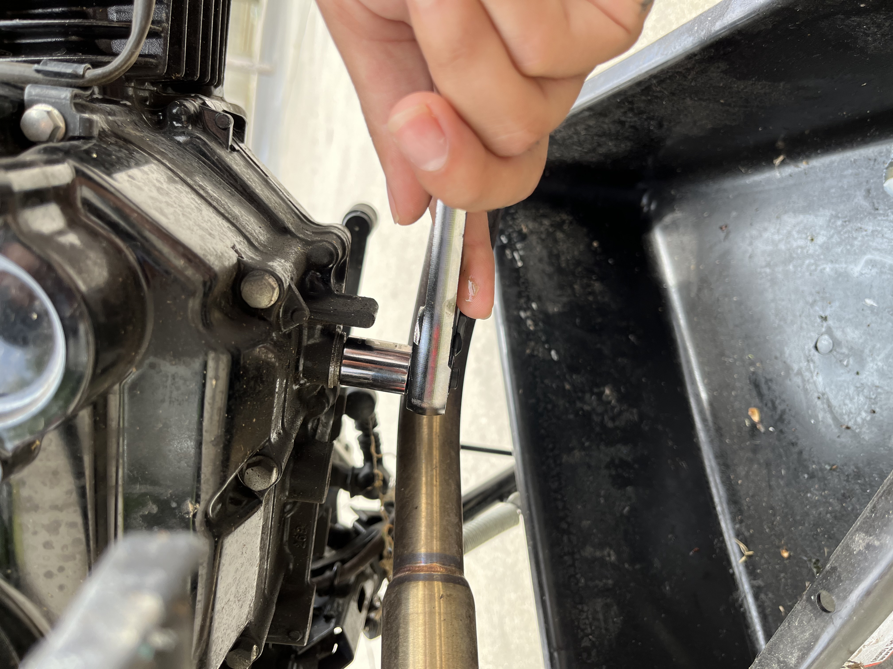
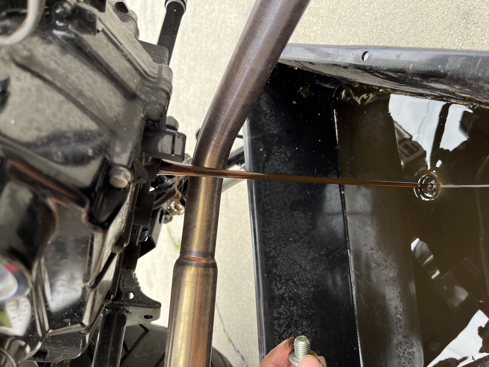
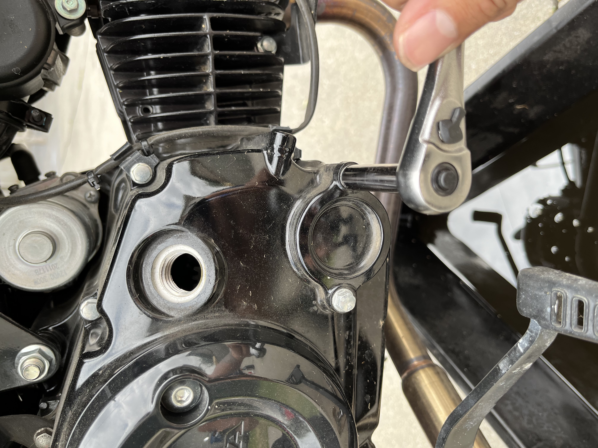
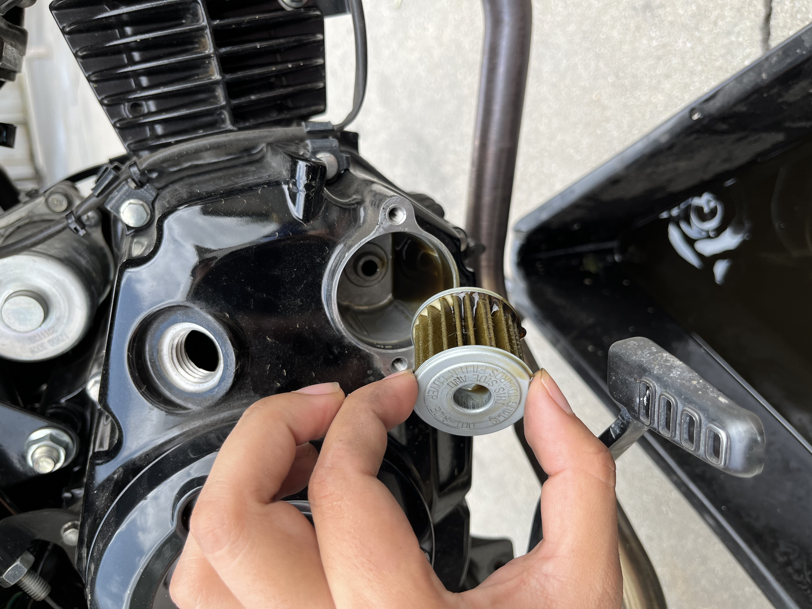
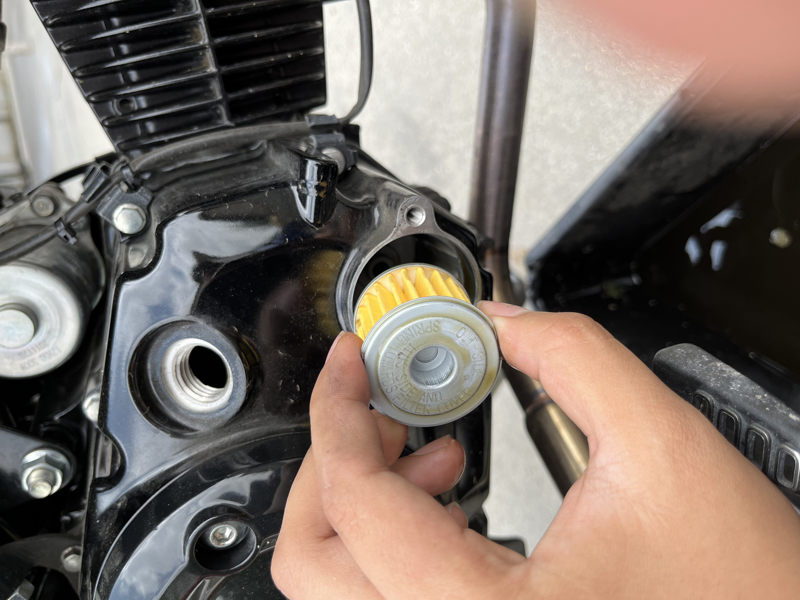
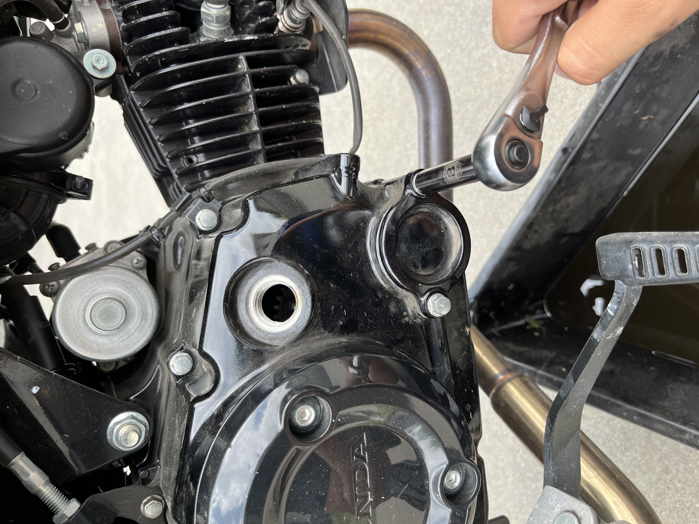
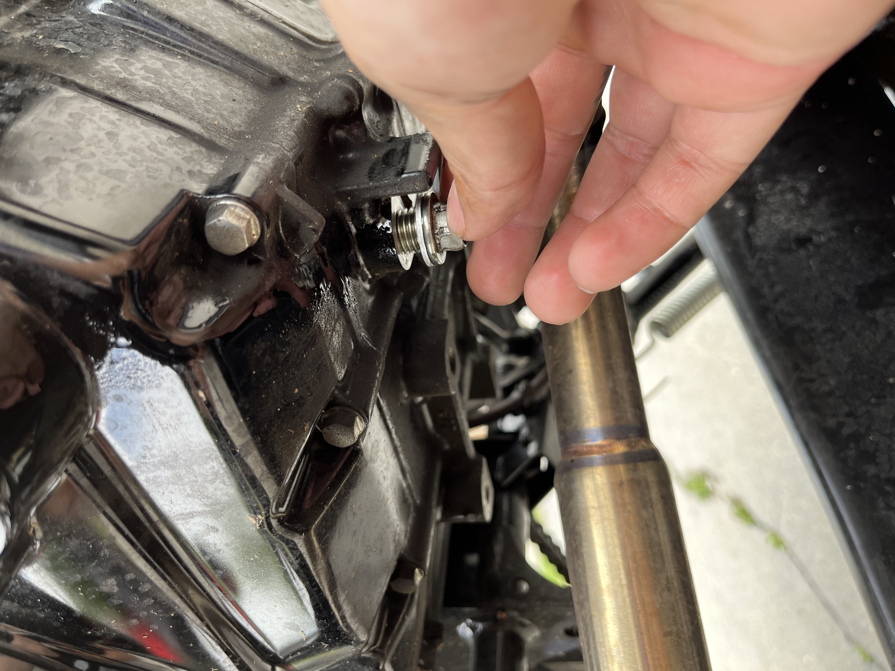
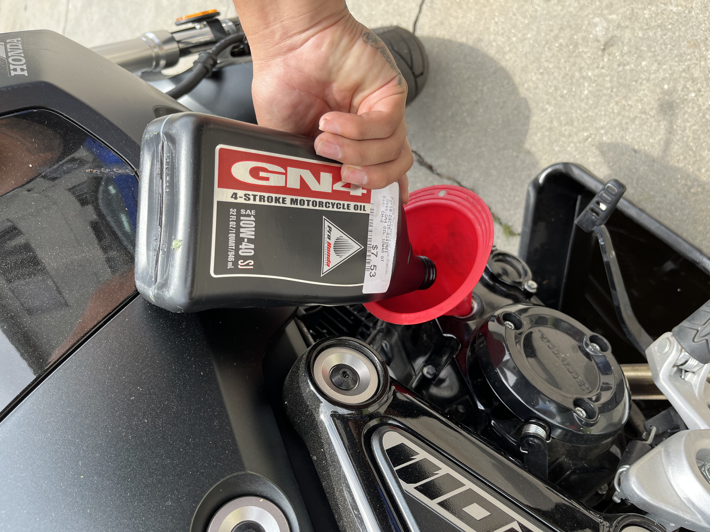
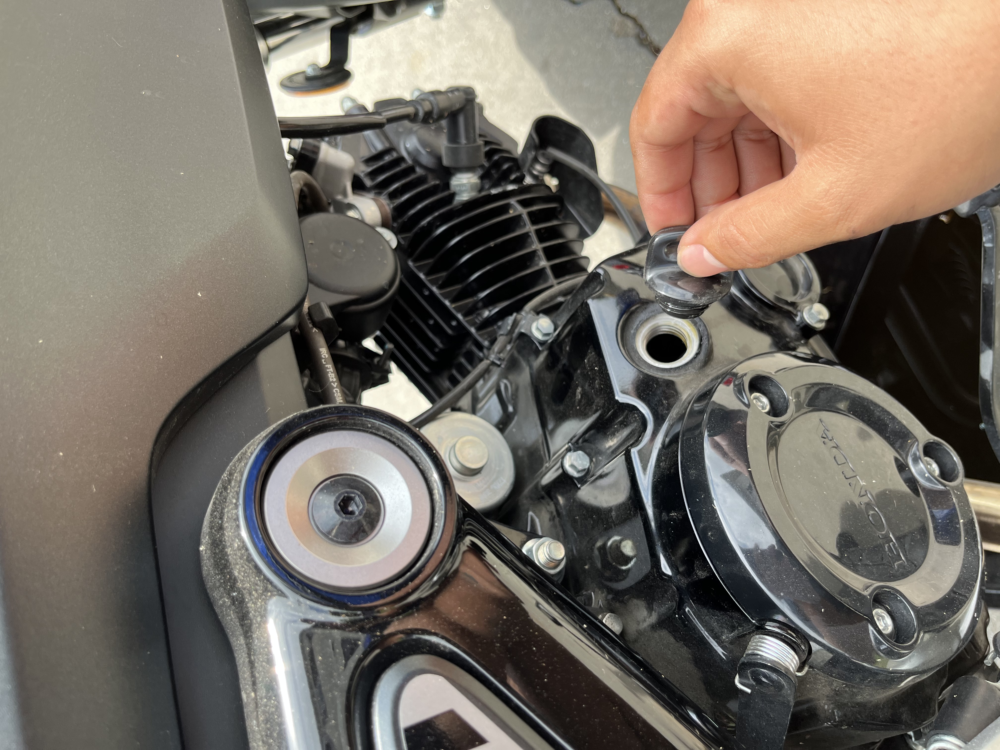
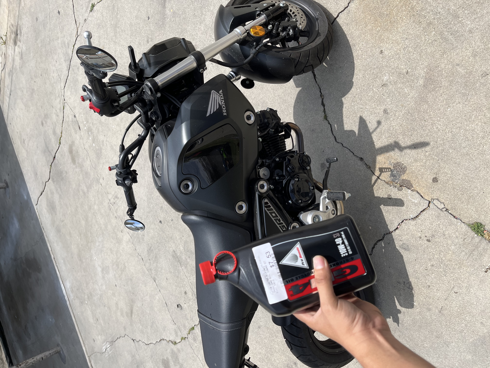

Hello! this website shows you how to change the oil on a 125cc motorcycle.
For this demonstration we are changing the oil on a Honda Grom model, this process is very similar with any 125cc motorcycle.
Step #1: Get your tools ready.

The tools needed are:
-1qt of motorcycle oil, refer to the user manual for the correct oil for your bike.
-Oil filter, you can get this from your local motorcycle dealership.
-A 12mm, 8mm socket, funnel and a wrench.
Step #2: Loosen up the drain plug with the 12mm socket and let the oil drain.
 Step #3: Untighten the two bolts using the 8mm to get to the oil filter and remove it.
 Step #4: Insert the new oil filter, thighten back the two bolts and cap.
 Step #5: Tighten the bottom drain plug, and put your new oil in.
 Step #6: Close the engine cap, recycle your old oil and take it to your local autozone.
 Congrats you have changed the oil in your motorcycle, I hope I saved you some dollars!